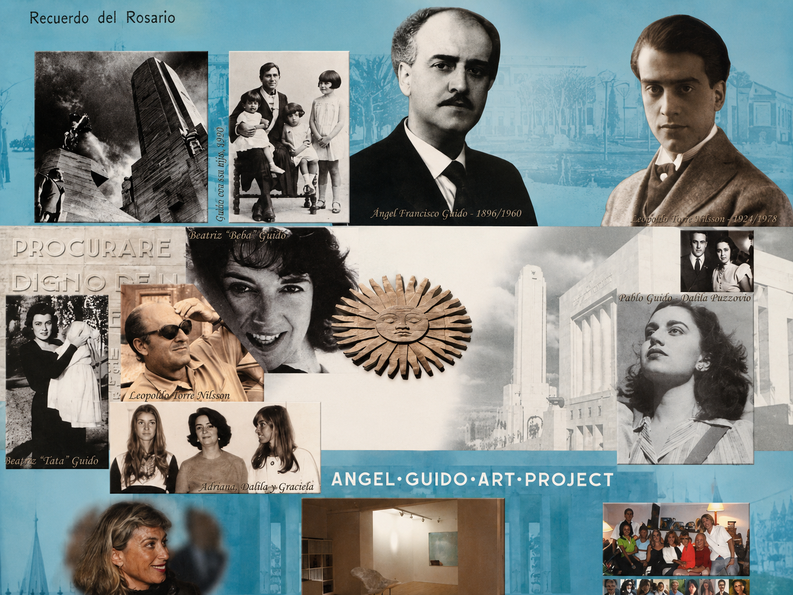
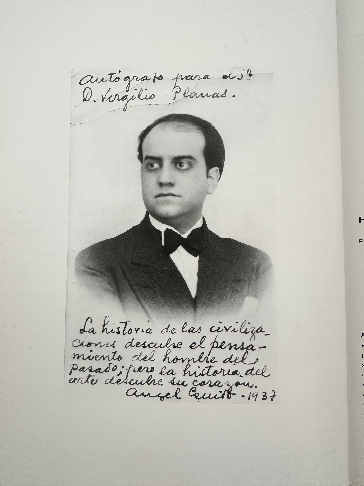

Identidad
Una mirada americana, argentina y profundamente vinculada con su tiempo.
Patrimonio · Pensamiento · Cultura argentina

El proyecto
“La historia del arte descubre su corazón.”
Ángel Guido Art Project preserva, investiga y proyecta el legado de una familia profundamente ligada a la construcción de la cultura argentina.
Desde Ángel Guido hasta Adriana Martínez Vivot, cada generación encontró su propia manera de crear, promover y sostener la vida cultural.
Una mirada americana, argentina y profundamente vinculada con su tiempo.
La cultura entendida como pensamiento, obra y acción.
Conservar documentos, obras y memorias para volver a ponerlos en circulación.
Un mismo compromiso cultural expresado por distintas generaciones.
Manifiesto visual

Linaje cultural

Arquitecto, historiador, ensayista y referente del pensamiento americanista.

Escritora y guionista fundamental de la cultura argentina del siglo XX.

Director y guionista que transformó el cine argentino y lo proyectó al mundo.

Fundadora de Ángel Guido Art Project y continuadora del legado familiar.
“Nuestra esperanza es que aquellas creaciones que nos representan surjan en toda América.”
Ángel Guido · Redescubrimiento de América en el arteColección y archivo
Un patrimonio familiar en proceso de investigación, catalogación y apertura.


Continuidad
Esta nueva etapa transforma el patrimonio de Ángel Guido Art Project en una plataforma viva, accesible y preparada para seguir creciendo.